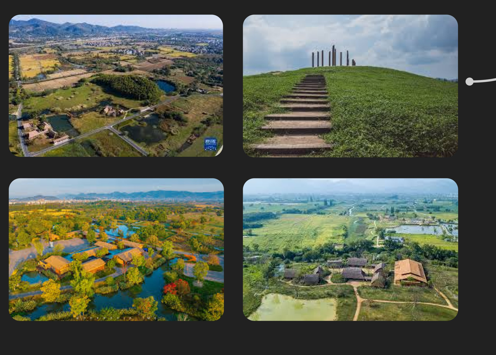
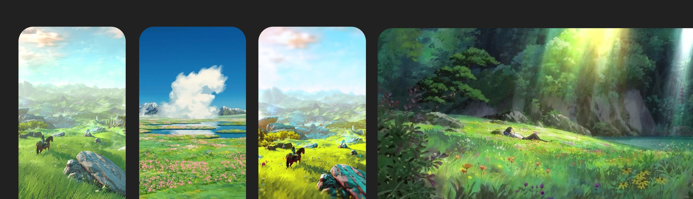
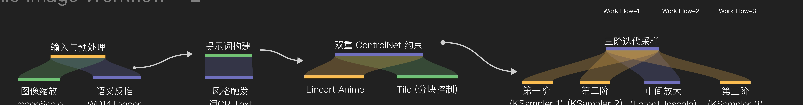
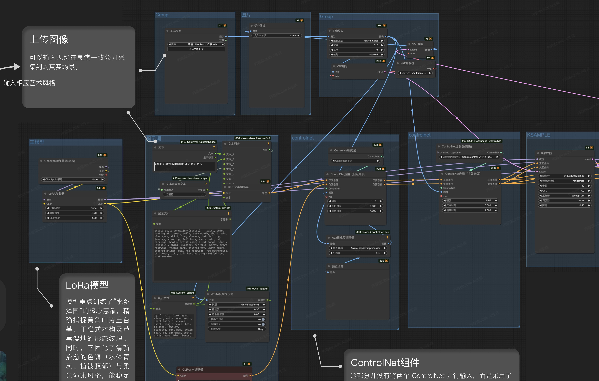
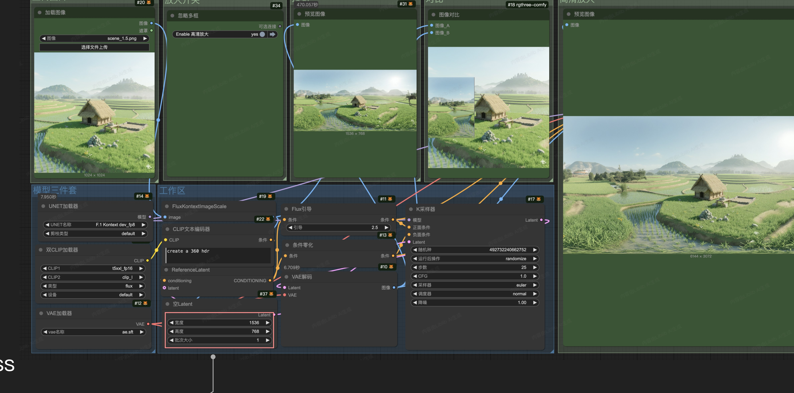
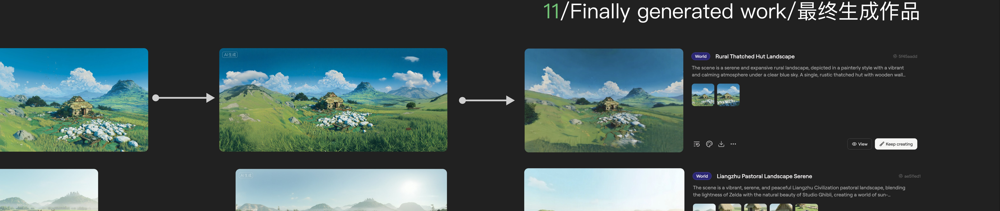
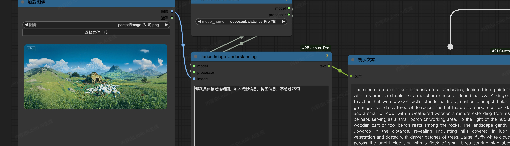
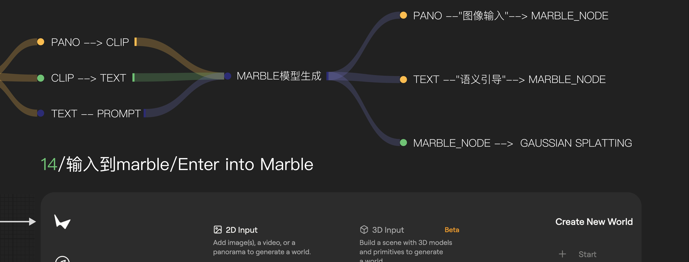
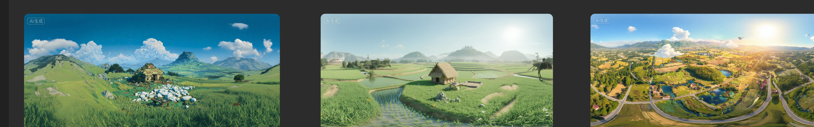
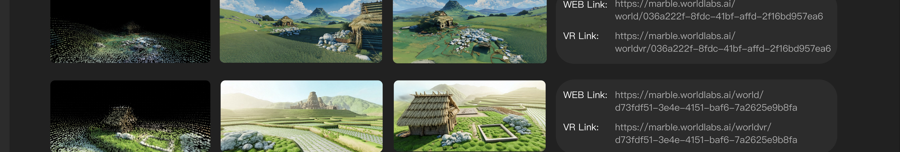

把一张平面插画，
几分钟内变成可以走进去的良渚。
良渚古城是典型的"水乡泽国"神权国家。场景复原聚焦于三组核心特征：

融合宫崎骏手绘美学，重构良渚水乡。盛夏积云下，柔光轻抚夯土宫殿与干栏木屋，清澈水道穿梭葱郁芦苇，营造清新治愈的史前梦境。


可输入在良渚一致公园采集的真实场景与相应艺术风格。LoRA 重点训练了"水乡泽国"的核心意象——精确捕捉莫角山夯土台基、干栏式木构与芦苇湿地的形态纹理，并固化清新治愈的色调。

为空间电影（Spatial Cinema）与游戏开发的前期制作，提供一套"零成本场景搭建"方案：把传统的 2D 概念设计图，瞬间转化为可进入、可探索的 3D VR 空间。
在实景搭建或高精 3D 建模之前，导演与游戏制作人可以通过一张平面图，在几分钟内佩戴 VR 头显"走进"场景，评估空间感、光影氛围与构图，极大降低试错成本。
强制全景扩展区域严格继承首图的笔触与色调，拒绝画风割裂。
处理左右边界闭合，确保 VR 头显在 360° 视野内完美连贯。
输出 2:1 标准全景格式，将"平面插画"转化为沉浸式 VR 环境底座。
这一步采用 Flux-Kontext 技术路径，而非传统 IP-Adapter 拼接，逻辑更简练高效。流程通过 Flux 架构实现单图向 360° 全景的智能延展——输入单图经 VAEEncode 与 ReferenceLatent 转化为"视觉种子"，由 Kontext dev 模型配合专用全景 LoRA，在 "create a 360 hdr" 提示下自动补全视野盲区，最后由 UltimateSDUpscale 高清重绘，输出无缝 HDRI 贴图。

全景图映射到球体时必须是 2:1——设成 1:1，VR 里的天顶与地底会被压扁，世界就变形了。

风格化重绘 → 全景图扩展 → 提示词反推 → MARBLE 模型生成 → Gaussian Splatting。三段工作流首尾相接，把"一张实景照片"逐步推进成"一个可漫游的世界"。
用 Janus-Pro-7B 对全景图反推出详尽的英文场景描述（PANO → CLIP → TEXT），再将"全景图 + 语义引导"一并喂入 Marble 的 Create New World——2D 全景作为图像输入，文本作为语义引导。



Marble 输出可探索的高斯泼溅（Gaussian Splatting）三维场景——从稀疏点云到完整渲染，每个世界都附带可在浏览器与 VR 头显中打开的链接，真正"走进"复原后的良渚。

在搭起一砖一瓦之前，
先走进去看一眼。
从一张航拍照片，到手绘风格场景，再到 360° 全景与可漫游的高斯泼溅世界——AI 让良渚的复原，从厚重的考古资料，变成可以真正"走进去"的一片土地。